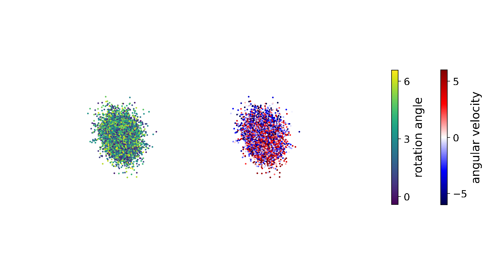

Core Tech Concepts and Context
Generative AI has evolved quickly into quite a big universe of it's own. You might have seen a lot of videos or articles with how interesting and cool the tech is or the quality of output images that people are able to generate. It's quite mesmerising to say the least. I was in the same place, and wanted to create a single place to house all the info, so that it can work as a documentation wiki of sorts for myself, and if it can help any other person along the way to learn more about it, feel free to read along and use this guide.
Let's start.
1. Diffusion Models
In machine learning, diffusion models are class of latent variable models that are trained to denoise images blurred with Gaussian Noise, by learning to reverse diffusion process.
What's the diffusion process?

Let's go back to the high-school days and remember the diffusion process that occurs in any solution. Ions / particles from a high concentration naturally move from a place of higher concentration to a place of lower concentration by default (2nd law of thermodynamics).
Now you can think of a reverse process in place, where you start with the most random and homogeneous state and and create a more ordered and structured state from there. These diffuser models are prcisely trained to do this job - in the visual space. This is a very high-level and not-so-correct explaination of the process, hence take it with a pound of salt and read more about it to learn the precise technical aspects of it. Maybe start here on wikipedia.
2. Noise
You might have heard about a concept called Signal vs Noise. In a very crude way - Signal is the set of data-set that is important for the problem/context and noise is just the other non-important set of data.
In the context of image processing / computer graphics domain, there are a lot of algorithms that can be used to generate random noises in 2D space. Every point in this 2D space corresponds to a pixel. Each pixel can be assumed as a vector/array/matrix (depending upon where-ever the color range is grayscale or RGB color space). Let's assume grayscale for simplicity and simple values of that range from 0 to 1 (0 for pure black and 1 for pure white - again for assumption). Now an algorithm is given a job to come up with values for each of these points, between 1 and 0, so that the final output is as random as possible, when analysed at various block sizes.
All algos have their cons and pros, and more can be read about them to know more about them. Some common examples are - Simplex Noise, Perlin Noise, Gaussian Noise that I know of. They are very important and used heavily in game dev industry, special effects industry, any kind of procedural generation context and as mentioned above - in the Image Generation ML context.
3. Latent Space

Latent Space is an abstract, lower-dimensional representation of high-dimensional data, often used in machine learning and data science to simplify complex data structures and reveal hidden patterns. It is particularly useful in unsupervised learning techniques, such as dimensionality reduction, clustering, and generative modeling. By transforming data into a latent space, data scientists can more efficiently analyze, visualize, and manipulate the data, leading to improved model performance and interpretability.
In the context of machine learning, latent space refers to a lower-dimensional space where the essential features of the original high-dimensional data are preserved. The term “latent” implies that the space captures the underlying structure or hidden relationships within the data. Latent spaces are often used to reduce the complexity of data, making it easier to work with and understand.
There are several methods for constructing latent spaces, including linear and nonlinear dimensionality reduction techniques, such as Principal Component Analysis (PCA), t-Distributed Stochastic Neighbor Embedding (t-SNE), and autoencoders. These methods aim to find a lower-dimensional representation of the data that retains as much of the original information as possible.
Generative models, such as Variational Autoencoders (VAEs) and Generative Adversarial Networks (GANs), learn to generate new data samples by modeling the latent space of the training data. These models can generate realistic and diverse samples by sampling from the learned latent space.
Latent spaces can be used to extract meaningful features from raw data, which can then be used as input for other machine learning models. Autoencoders, for example, can learn a compressed representation of the input data in the latent space, which can then be used for tasks like classification or regression.
Visualizing high-dimensional data can be challenging, but by projecting the data into a lower-dimensional latent space, it becomes easier to explore and interpret. Techniques like PCA and t-SNE are commonly used to create 2D or 3D visualizations of complex data.
For Deeper Understanding read this article
Related topics
Todo:
[ ] Intuitive explaination of Latent Space
[ ] Add custom visualisation
[ ] Add better / HQ resources and links
Tools of the trade
Okay, so now that we know about the tech and the common terms that are thrown around, we might ask where to start?
If you quickly google, you might end up with a bunch of platforms and services that offer you to explore the stuff. Some are intricate while are productized to make them easy to use. Some might be focused on a particular style, while others are gneralized but seem hard to use.
As far as I've understood it, there are three main players in this market, and each of them have their own set of cons and pros.
Stable Diffusion

If you check out their wikipedia page, you can see that it's an open-source model that was initially started by Runway, CompVis and Stability AI orgs and is currently developed and maintained by Stability AI.
| Benefits | Issues |
|---|---|
| It's open source | Not an out of the box solution. |
| Can be self-hosted. | Setup might seem a little complex |
| Large active community | Community stuff is flooded with NSFW content/modifications |
| Controllable & Customisable | Workflows with high yield, might become complex and reduce transferability |
| Free to use (on your own hardware) | |
| Personally the quality out output is very high right now, if the customisations are done properly. |

Midjourney

A closed source product, developed and maintained by SF based private corp called Midjourney, Inc.
| Features |
|---|
| Paid |
| Closed-source |
| Very High Quality |
| Diverse range of outputs |
| Non-customisable /Mod-able |
| Large active user-base |
| Responsive & active dev team |
| Limited Controllability |
DALL·E 2

A closed source program & api that is developed and maintained by the private corp - Open AI.
| Features |
|---|
| Paid |
| Closed-source |
| Mid-High Quality output |
| Limited range of outputs (good in photo-realism, but face-generation is messed up out of the box) |
| Non-customisable /Mod-able |
| Large active user-base |
| The dev team is highly responsive and works with lot of user-feedback for model enhancement and feature development both. |
| Non-controllable |


Based on your choice, requirements, and context of application you can use the platform of your choice. Remember that any other service/app/website that you might encounter apart from these - most probably will be using one/mix of these three AFAIK.
Dalle and Midjourney will use your input data for their further model training for sure. If you are using on-prem/local version of Stable diffusion, you know it's not going anywhere. So if your use-case requires your to not share the image data, you cannot use the former 2 options.
On the other hand, if you don't wanna get into complex workflow, won't mind shelling some US$10-US$30 per month and have no data-protection reasons, you can pick Dalle or Midjourney.
I personally am getting gravitating towards Stable diffusion these days for a few reasons:
It's Free, so I can experiment as much as I want and won't have to worry about the cost.
High Control, I can use various mods / extensions developed by the amazing community and learn to achieve higher order of determinism in order to achieve what I want
Adobe Firefly

Personally, I won't keep it at the same level as the other three platforms mentioned above, but it is an independent platforms with quite powerful features - so definitely worth knowing about. Developed by Adobe, it is quite easy to use, since it's integrated deeply and must say very well into the creative cloud suite. So if you are already an Adbe Creative Cloud customer, you would just love how easy it is to use and become hyper-productive. I personally haven't explored it much yet to develop an opinion, and would expand my thoughts here when I am done checking it out properly.
But still, prima facie, the CC membership might be a huge cost for people who are not-already subscribed. Additionaly, being closed-source, it comes with the same set of limitations as mentioned above. But from that I've seen around - it seems fast and pretty decent - pretty good in terms of quality of output yet. So you might want to check it out and see for yourself if it works out for you.

Further Readings
Tooling - Basics
There are a few concepts that are used when you start interacting with any of the tools/platforms. Some of them are common while others might be specific. Let's see what do they mean.
Text2Img
This might refence a model or a workflow that simply does one thing - Create image(s) from text. The text in this context is called a prompt. This is generally the most popular use-case on most of the platforms.
Img2Img
This would be a reference to a model or a workflow that can help you use an image as source and additionally might use some prompt, to create an output image. This is used to stylize images, recolor them, modify them in some subjective way, etc.
Inpainting
This would reference to a model or a workflow, where you have a source image, and you only want to modify it partially.
If available, the UIs generally have a painting option, that let's you paint an area on the image - to mark it for modification via a prompt. These painted areas are termed as Masks. When the model works on them, it tries to take into consideration the content behind the mask, and it's nearby pixels, to generate the output partials - post which it combined it with the source and give you the final output.
This is generally used to extend backgrounds, swap faces, remove objects from an image selectively, change objects in an image in some way, deepfakes (in a limited way), etc.
Upscaling
This is generally used in reference for a model or a workflow that lets you enhance an image from a small resolution to a large resolution and add details to it, while tryin to keep it as true to the source as possible.
This is mostly used in the case of upscaling products, image restoration, etc.
Prompt Structure and Keyword Categories
In the rapidly evolving field of artificial intelligence, the ability to generate images from text prompts using diffusion-based generative models has opened up a new frontier of possibilities. These models, such as the stable diffusion counterparts, have the capability to transform a string of words into a vivid image, creating a bridge between human language and visual representation. However, the effectiveness of these models is highly dependent on the quality of the prompts provided. This guidebook is designed to help beginners understand and master the art of crafting effective prompts for diffusion-based text-to-image AI models. It will delve into the nuances of prompt creation, exploring the balance between specificity and ambiguity, the use of descriptive language, and the importance of context. We will demystify the jargon, elucidate the mechanics behind these models, and provide practical examples to illustrate key principles. Whether you are a researcher, a developer, or an AI enthusiast, this guidebook will equip you with the knowledge and skills needed to harness the full potential of text-to-image generative AI models.
Key Points to remember:
Understand the Model: Before writing prompts, it's crucial to understand how the model works, its strengths and limitations. This includes understanding the diffusion-based process and how it translates text into images. [ Add working on SD / Dalle / MJ ]
Be Specific: The more specific the prompt, the better the output. Include details about colors, sizes, positions, and other attributes when relevant.
But Avoid Over-Specification: While specificity is important, over-specification can lead to unrealistic expectations or confuse the model. Strike a balance.
Context Matters: The model doesn't understand the world like humans do. Providing context can help generate more accurate images.
Experiment Frequently: The best way to learn is by doing. Experiment with different types of prompts to see what works best.
Analyze Outputs: Spend time analyzing the generated images. Understanding why a model produced a particular image can provide insights into how to improve your prompts.
Iterate and Refine: Based on your analysis, refine your prompts. This iterative process is key to mastering prompt writing.
Describe: Descriptive words can help the model better understand the desired output.
Leverage Existing Samples: Look at successful prompts used by others. These can provide inspiration and practical examples of effective prompting.
Understand the Impact of Temperature (CFG): The temperature parameter in generative models affects randomness. Understanding its impact can help you control the image generation process.
Be Patient: Learning to write effective prompts takes time. Don't get discouraged if your initial attempts don't yield perfect results.
Stay Updated: AI is a rapidly evolving field. Stay updated with new techniques, improvements, and best practices in prompt writing.
Be Ethical: Always consider the ethical implications of the images you're generating and the prompts you're using.
Collaborate and Learn: Engage with the AI community. Sharing knowledge and learning from others can accelerate your mastery of prompt writing.
Document Your Process: Keep a record of your prompts and their outputs. This will help you track your progress, identify patterns, and refine your approach.
Impacting Factors
Model Parameters: The parameters set during the image generation process, such as temperature, can greatly influence the output. For example, a higher temperature increases randomness, leading to more diverse but potentially less controlled outputs. Conversely, a lower temperature makes the output more deterministic but possibly less creative.
Prompt Specificity and Clarity: The detail and clarity of the prompt are crucial. Both DALL-E 2 and Midjourney rely heavily on the prompt to generate images. A clear and specific prompt can guide the model to produce a more accurate and relevant image.
Model Training Data: The data used to train the model will have a significant impact on the output. If a model has been trained on a diverse and high-quality dataset, it is more likely to generate accurate and diverse images.
Underlying Model Architecture: The architecture of the model dictates its capabilities and limitations. For instance, Stable Diffusion 1.5 might excel in generating certain types of images due to its unique architecture and training process, while DALL-E 2 might be better at others.
Use of Descriptive Language: The use of descriptive language in prompts can significantly influence the output. More descriptive prompts can help the model visualize the scene better and generate more detailed and accurate images.
It's important to note that these factors are interconnected. For example, the effectiveness of descriptive language in a prompt can be influenced by the model's training data and architecture. Similarly, the choice of model parameters can depend on the specificities of the prompt and the desired level of creativity or control in the output.
Keyword Categories
-
Material/Medium/Technique:
These keywords describe the physical medium or artistic technique that should be simulated in the image. They can influence the texture, color, and overall look of the image.
Example Keywords: oil, watercolor, charcoal, acrylic, pencil, ink, pastel, collage, digital, mosaic.
Example Prompts:
“An oil painting of a dog”
“A watercolor painting of a dog”
“A charcoal drawing of a dog”
“An acrylic painting of a dog”
“A pencil sketch of a dog”
“A collage a dog”
“A digital painting of a dog”
“A mosaic art of a dog”
“A marble sculpture of a dog”
-
Style:
These keywords specify a particular artistic style or genre. They can drastically change the interpretation and presentation of the elements in the image.
Examples: surrealism, cubism, impressionism, realism, abstract, pop art, minimalism, baroque, romanticism, gothic.
-
Famous Artists
These keywords refer to well-known artists whose style you want the AI to mimic. This can result in images that resemble the artist's distinctive style.
Examples: Picasso, Van Gogh, Dali, Monet, Warhol, Rembrandt, Klimt, Pollock, Hokusai, O'Keeffe.
-
Popular Art/Photography Websites
These keywords refer to the style or aesthetic commonly seen on popular art and photography platforms. These can influence the style and composition of the image.
Examples: Instagram, DeviantArt, Unsplash, 500px, Behance, Flickr, Pinterest, Dribbble, ArtStation, Getty Images.
-
Detail/Resolution/Effects
These keywords describe the level of detail, image resolution, or special effects that should be present in the image. They can influence the clarity, quality, and visual impact of the image.
Examples: high-resolution, low-poly, blurred, sharpened, grainy, bokeh, lens flare, HDR, vignette, pixelated.
-
Additional Details
These keywords add extra elements or features to the scene that aren't covered by other categories. They can add complexity and specificity to the image.
Examples: with a hat, holding a book, under a tree, next to a river, wearing glasses, surrounded by flowers, in the rain, against the sunset, beneath the stars, on a cliff.
-
Color doping
These keywords specify the color scheme or tint of the image. They can set the mood of the image and highlight certain elements.
Examples: monochrome, sepia, vibrant, pastel, neon, grayscale, saturated, warm tones, cool tones, black and white.
-
Lighting Descriptors
These keywords describe the lighting conditions of the scene. They can dramatically change the atmosphere and depth of the image.
Examples: backlit, soft light, hard light, golden hour, twilight, shadow, silhouette, spotlight, diffused light, candlelight.
-
Camera
These keywords indicate the type of camera or lens effect that should be simulated. They can affect the field of view, depth of field, and distortion in the image.
Examples: fisheye, wide-angle, telephoto, macro, tilt-shift, infrared, pinhole, panoramic, time-lapse, drone.
-
Perspective
These keywords indicate the viewpoint from which the scene is seen. They can create a sense of depth, scale, and spatial relationship in the image.
Examples: bird's-eye view, worm's-eye view, first-person perspective, side view, three-quarter view, cross-section, close-up, wide shot, over-the-shoulder, point of view.
Negative Prompts
Negative prompts are instructions that specify what you do not want the AI to generate. They work by guiding the AI away from certain outputs, helping to narrow down the possibilities and achieve a more desired result. The impact of negative prompts can be significant, especially when dealing with a broad or ambiguous positive prompt. They can help reduce irrelevant or undesired elements in the AI's output.
For instance, if you're using StableDiffusion to generate an image of a "dog", you might get a wide variety of dog breeds, sizes, and colors. But if you add a negative prompt like "not a poodle", the AI will be guided away from generating images of poodles, resulting in a narrower range of outputs.
To make negative prompts most effective, they should be as specific and clear as possible. Avoid negative prompts that contradict the positive prompt or each other, as this can confuse the AI and lead to poor results. Also, it's generally more effective to use a mix of positive and negative prompts, rather than relying solely on negative prompts.
Process
Iterative Building, Negative Prompting, etc.: The process of writing effective prompts is often iterative, involving trial and error, refining, and building upon previous prompts. Start with a basic prompt, then refine it based on the AI's output. If the output is too broad or vague, add more specific details. If the output includes undesired elements, add negative prompts to exclude them.
It's also helpful to think of the prompt as a conversation with the AI. You're not just giving a single instruction, but guiding the AI towards the desired output. This might involve asking the AI to think step by step, break down complex tasks into simpler ones, or explain its reasoning. This interactive approach can lead to more effective and engaging outputs.
Finally, remember to consider the AI's limitations and strengths. For example, the AI doesn't understand the world in the same way humans do, so it's often more effective to guide it with clear, explicit instructions rather than relying on implicit or assumed knowledge.
Association Effects
How Keywords Interact with Each Other: When you're writing prompts for AI models, the keywords you use don't exist in isolation. They interact with each other and can produce associative effects.
For example, if you use the keywords "dog" and "beach", the AI might generate an image of a dog playing on a beach, because that's a common association between those keywords. But if you use the keywords "dog" and "moon", the AI might struggle because there's no clear association between them.
The associative effect can be both a blessing and a curse. It can lead to creative and unexpected outputs, but it can also lead to outputs that don't match your intent. To manage the associative effect, it's important to consider the relationships between your keywords and how they might influence the AI's output.
If the AI is making associations that you don't want, you can use negative prompts to guide it away from those associations. For example, if you want an image of a dog and a beach, but you don't want the dog to be playing, you could use a negative prompt like "dog and beach, not playing".
You can also use positive prompts to guide the AI towards specific associations. For example, if you want an image of a dog and a moon, and you want the dog to be howling at the moon, you could use a positive prompt like "dog howling at the moon".
Finally, iterative prompting can be a useful technique for managing the associative effect. If the AI's output isn't what you wanted, you can refine your prompt based on the output and try again.